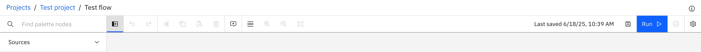
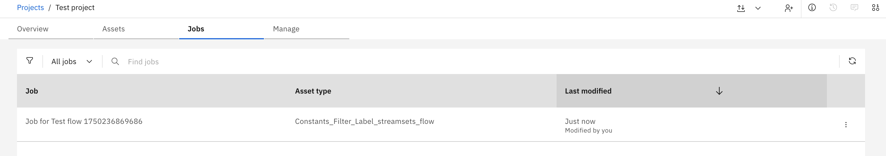
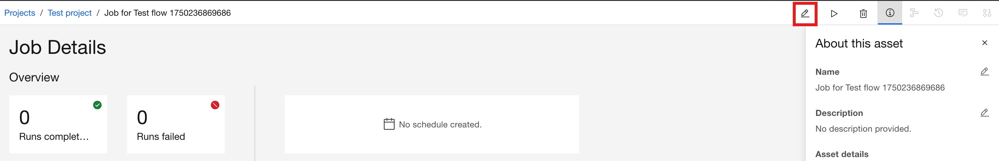
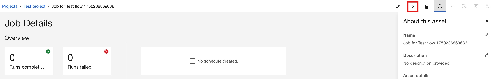
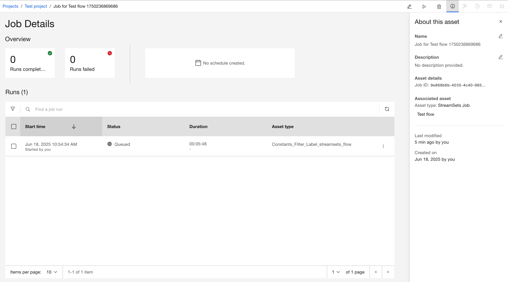
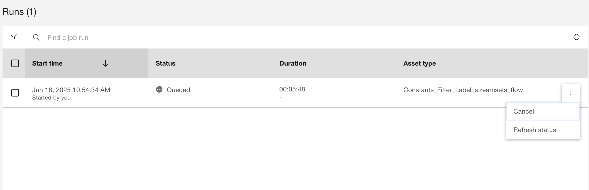

Jobs#
A job is an executable unit of work defined for a specific asset. It acts as a reusable template that includes basic configuration and parameters.
The actual execution of a job is referred to as a job run. A job run allows you to override the default configuration and captures runtime execution details. The SDK provides functionality to interact with both jobs and job runs on the watsonx.data integration platform.
- This includes operations such as:
Creating and deleting jobs
Updating a job
Starting a job
Cancelling a job run
Retrieving logs from a job run
Creating a Job#
In the UI, you can create and run a new Job directly from flow canvas by clicking Run button.
{kind=link}
To create a new Job object within a
Project using SDK,
first select the appropriate project from the Platform,
then use the Project.create_job()
method to instantiate the job.
You must specify either asset_ref or asset_ret_type, but not both.
The asset_ref represents the ID of the flow for which the job will be created.
You also need to pass the Environment.id
property value as streamsets_env_id in configuration.
Additionally, you can provide optional configuration such as environment variables or job parameters.
This method returns a Job object.
>>> project = platform.projects[0]
>>> job = project.create_job(
... asset_ref=flow.metadata.asset_id,
... name="Test Job",
... description="...",
... configuration={
... "streamsets_env_id": environment.id,
... },
... job_parameters={"name": "value"}
... )
Job(name='Job for Test flow 1750236869686' version=0, project_name='Test project')
Retrieving an Existing Job#
To list existing jobs in the UI, navigate to Jobs tab in project view.
{kind=link}
Jobs can be retrieved using Project.jobs property.
You can also further filter and refine the jobs returned based on attributes including
space_id, asset_ref, asset_ref_type and run_id.
This property returns a Jobs object.
>>> # Returns first job matching given `asset_ref`
>>> job = project.jobs.get(asset_ref="ae0d053b-c4f6-4266-9b02-724e6eb94855")
Job(name='Job for Test flow 1750236869686' version=0, project_name='Test project')
>>> # Return a list of all jobs that match `asset_ref_type`
>>> jobs = project.jobs.get_all(asset_ref_type="data_intg_flow")
[Job(name='Job for Test flow 1750236869686' version=0, project_name='Test project')]
Updating a Job#
In the UI, you can update a job by selecting its title from the jobs list. To update a job, click the pencil icon in the top bar.
{kind=link}
Updating a job is also possible via Project instance.
First, modify the properties of the existing job, then update it using the
update_job() method.
This method returns an HTTP response indicating the status of the update operation.
The response also includes the updated job definition.
>>> job = project.jobs.get(asset_ref="ae0d053b-c4f6-4266-9b02-724e6eb94855")
>>> job.name = "New name"
>>> job.description = "New description."
>>> res = project.update_job(job)
<Response [200]>
Deleting a Job#
In the UI, you can delete a job by selecting its title from the jobs list. To delete a job, click the trash icon in the top bar.
{kind=link}
To delete a job, you can pass the job instance to Project.delete_job().
This method returns an HTTP response indicating the status of the delete operation.
>>> job = project.jobs.get(asset_ref="ae0d053b-c4f6-4266-9b02-724e6eb94855")
>>> res = project.delete_job(job)
<Response [204]>
Starting a Job#
In the UI, you can start job from Job Details page by clicking play icon.
{kind=link}
A job instance serves as a template to actually execute the flow for which the job was created.
Call start() method on the job instance.
You can pass the name and description parameters to define the job run.
Additionally, you can further configure the job run by passing the configurations,
job_parameters and parameter_sets parameters to this method.
This method returns a JobRun object.
>>> job_run = job.start(name="Test Job Run", description="...")
>>> job_run
JobRun(name='job run', job_name='Job for Test flow 1750236869686', state='Queued')
Retrieving a Job Run#
In the UI, list the job runs by navigating to the Jobs tab, selecting a job, and viewing the Job Details page.
{kind=link}
Job Runs can be retrieved using job_runs property.
You can also further filter and refine the jobs returned based on attributes including
space_id and states.
This property returns a JobRuns object.
>>> # Returns a list of all job runs for given job
>>> job_runs = job.job_runs
[JobRun(name='job run', job_name='Job for Test flow 1750236869686', state='Queued')]
>>> # Returns a list of all job runs which status is `Running`
>>> job_runs = job.job_runs.get_all(states=[JobRunState.Running.value])
[JobRun(name='job run', job_name='Job for Test flow 1750236869686', state='Running')]
Cancelling a Job Run#
In the UI, you can cancel a job run by selecting Cancel from the three-dot menu of the selected run.
{kind=link}
To cancel a running job run using SDK, use the cancel()
method on the job run instance.
This method returns an HTTP response indicating the status of the operation.
>>> res = job_run.cancel()
<Response [204]>
Retrieving a Job Run logs#
Runtime logs for a job run execution are stored in the
JobRun.logs property.
It returns a list where each entry is a string containing a log message.
>>> job_run.logs
[
"##I IIS-DSEE-TOSH-00397 2025-05-27 14:27:27(000) Starting job Job for Test flow 1750236869686",
"##I IIS-DSEE-TOSH-00408 2025-05-27 14:27:27(000) Job Parameters:",
...
]